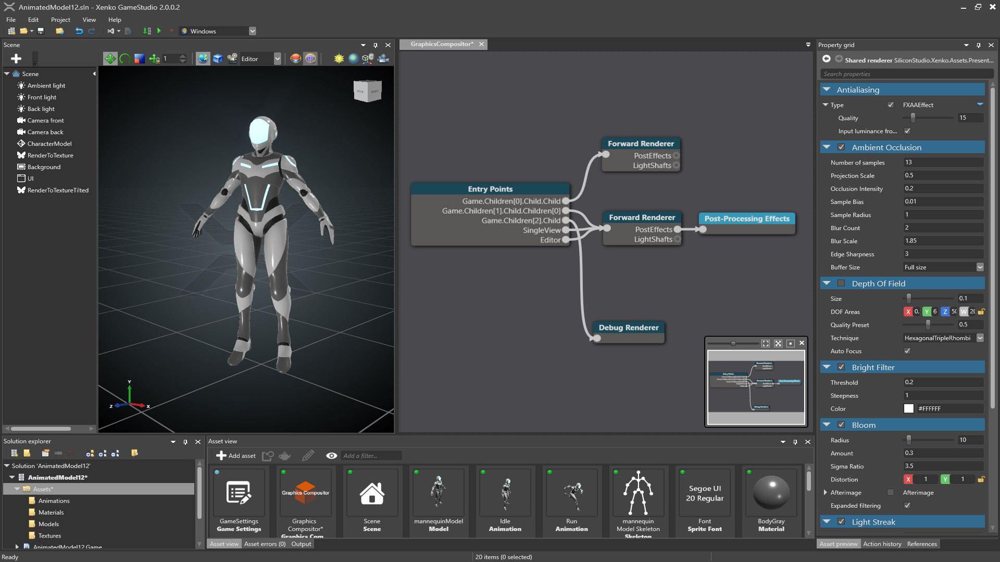

Xenko 2.0 release notes
Highlights
Scene hierarchy and scene streaming
Working with scenes has become more flexible. Instead of a single scene, your game can now use a hierarchy of scenes to organize entities into levels, areas or layers, and let teams collaborate on them more efficiently.
Game Studio displays child scenes together with their parent. Individual scenes can be loaded, unload, locked and moved around.
When running your game, the default scene set in your game settings is loaded as the root scene and can be used to store persistent entities. More scenes can be dynamically loaded and unloaded from scripts and added as child scenes.
var childScene = Content.Load<Scene>("myChildScene");
SceneSystem.SceneInstance.RootScene.Children.Add(childScene);
To get started, take a look at the new built-in SceneStreamingScript. It demonstrates background scene loading when passing through trigger volumes.
You can now use a scene's Offset to move its entities both at design time and runtime.
The ChildSceneComponent has been removed. We encourage all entities to be managed by a single entity manager and rendered by a single graphics compositor.
Virtual reality
Enabling VR is now as simple as a single click!
Xenko's clustered forward rendering, with its multisample anti-aliasing, makes it ideal for VR. Xenko uses a single API for every device, with native support for Oculus and HTV Vive (more devices coming very soon).
Xenko comes with a VR game sample that shows you how to implement VR gameplay, including environment interaction and teleportation:
Save valuable time by visualizing and testing VR directly from the scene editor:
Global illumination with light probes
Light probes capture the lighting at the position you place them. They simulate indirect light, the effect of light bouncing off surfaces and illuminating other surfaces.
They can make a dramatic difference to the mood and appearance of your scene.
Light probes can be placed freely and are processed per pixel. This means you can use them not only on small dynamic objects, but also large or static objects (until we have light maps for those!).
Last but not least, you can now very easily capture a DDS cubemap from current camera position in editor, for use as a diffuse or specular skybox light.
Light shafts
Xenko now supports shadow map-based light shafts for directional lights.
Our implementation uses ray-marching rather than post effects, making the shaft visible and cool-looking even if the light source isn't visible.
Graphics compositor
The graphics compositor is now a separate asset.
Rendering parameters (such as VR) and post effect parameters can be tweaked in just a few clicks.

This is just the first step towards making the graphics compositor easy to customize and extend. Stay tuned for more changes in future releases!
Improved Visual Studio experience
We now have full support for Visual Studio 2017!
- Xenko Visual Studio extension now supports Visual Studio 2017
- Game Studio recognizes Visual Studio 2017
- Games can use C# 7.0, and our script editor can recognize C# 7.0 and offer C# 7.0 refactoring thanks to Roslyn (you need to make your solution VS2017+ for it to work)
- Our internal
AssemblyProcessorwhich perform various operations on generated assemblies can now work with portable PDB (as generated by .NET Standard projects)
Programmers working with Xenko often go back and forth between Game Studio and Visual Studio. To make their lives easier, we made a few key improvements to the Xenko Visual Studio extension:
- You can now open the current solution in Game Studio directly from Visual Studio.
- Syntax highlighting didn't behave well when switching theme.
- Previously, when assets are compiling, MSBuild didn't report any progress until finished. It now displays information, warnings and errors while it compiles.
Also, our whole build infrastructure and script editor is now based on the latest version of MSBuild 2017 and Roslyn. Supporting the new VS2017 Project System with .NET Standard is just a few steps away!
Faster and lighter
In order to provide a better experience for users, we've been working hard on various fronts to make the editor smoother and more responsive. This is still a work in progress and expect regular improvements.
Also, the package size is almost three times smaller, resulting in much faster download and install time.
Breaking changes
Backward compatibility
Xenko 2.0 supports project upgrades only for projects created with Xenko 1.10 Beta. If you want to upgrade a project made with an older version, update it to Xenko 1.10 first.
Visual Studio support
Xenko 2.0 supports Visual Studio 2015 and Visual Studio 2017 as IDEs. Visual Studio 2013 and earlier versions are no longer supported.
When upgrading a project from earlier version, in its .csproj file, set ToolsVersion="14.0" as the minimum required version.
Navigation
All compontents related to navigation have been moved to their own SiliconStudio.Xenko.Navigation assembly and namespace.
Graphics Compositor
Previously, rendering pipeline was customized by magic IPipelinePlugin at runtime. This was very hard to control. Now, most of the pipeline configuration happens at design time in the new Graphics Compositor asset.
RenderFrame is gone. Renderer are typically declaring and allocating render targets.
Known issues
- On Linux, when switching the underlying Graphics Platform, rendering doesn't occur or fail. To fix the problem, delete the cache, local, and roaming folders on the Linux host and restart the game.
- Performance issues on mobile (being worked on)
- On iOS, if
Enable device-specific buildsis toggled on (from the project properties), it's not possible to debug game code. To speed up your development manually select the architecture of your device from the Advanced tab. - Live scripting has been temporarily disabled
Changelog
Version 2.0.0.2 — 25 April 2017
Improvements
General
- Added VR game template
- Game Studio and actual runtime game now share the same build cache. This should speed up build times.
- Build dependencies are managed by a new system that greatly simplify copying and deployment. This should later benefit plugins and user projects when exposed to the user
Game Studio
- Improved how internal objects of an asset can be referenced
- Improved keyboard navigation in tree views (eg entity hierarchy in scene and prefab editors)
- Improved scrolling in tree views
- Improved drag and drop performance
- Entities can now be dragged and dropped from one scene to another
- Exceptions in the embedded game of a scene editor no longer crash Game Studio and can be recoverable
- Components of vectors can now be edited independently when using multi-selection
- Camera navigation now uses a different key set:
- Alt + left mouse button - orbit
- Mouse wheel - zoom
- Right mouse button - spin camera
- Middle mouse button - pan
- Right + middle mouse buttons - camera hover
- Added camera speed slider
- The "New game" template has been touched up
- "Save" and "Save all" have been merged into just "Save"
- Navigation mesh overlay visibility can now be toggled per group
- Scripts can now be closed without saving and opened again later
- Script undo history now persists after closing a script
- Added ability to capture a DDS cubemap from current editor camera position.
- When viewing vertex streams, normals are now in 0..1 range instead of -1..1. Also, it is now possible to view normals in both world and tangent space
Assets
- Texture assets are now split into color, normal and grayscale subtypes
- Replaced
SkyboxUsageenum onSkyboxAssetwith a booleanIsSpecularOnly - Improved robustness and error reporting on invalid Yaml when opening assets
Engine
- Added support for splash screens (they show only in release builds)
Audio
- Added HRTF binaural audio support for Windows (10+)
Graphics
- Added MSAA support
- Added custom MSAA resolving filters
- Shadow cascade calculation is now more stable
- Multiple render targets now have better support
- Point lights can now cast shadows
SkyboxComponenthas been removed and the functionality moved into theLightComponentandBackgroundComponentBackgroundComponentnow accepts cubemap textures as an input- D3D11: Shaders that are compatible shares the same bytecode, avoiding extra state changes.
- OpenGL: Implemented UpdateSubresource for 3D textures
Particles
- Additive rotation no longer has a default value of 1 radian; it's now 0
- Initializers and updaters no longer add particle fields when disabled
Physics
- Reworked collisions filtering to improve performance
Navigation
- Bounding boxes can now be placed in the scene
- Navigation meshes can now be generated/updated at runtime
TryFindPathnow returns false instead of crashing if no navigation mesh is loaded- Navigation mesh layer indexes have been replaced with groups
VR
- Unique device-agnostic API
- Oculus Rift support (HMD and controllers)
- Vive support (HMD and controllers)
Bug fixes
Game Studio
- Naming project libraries now avoids collisions
- Invalid characters in the project name are now filtered out correctly and don't prevent the project compiling
- Changing gizmo sizes no longer causes the slider to jump
- Switching between gizmos no longer crashes the scene editor
- Asset copy/paste now works better
- Thumbnail behavior is now more stable
- Fixed leaking of deleted assets or entities when navigating through the selection history
- Fixed renaming assets undo/redo
- Renaming an asset no longer closes its editor
- Fixed reparenting assets with Alt key (maintains world position)
- Fixed many problems related to manipulation of entities from prefabs
- Fixed many problems related to moving entities in the scene hierarchy
- The property grid now properly handles multi-selection
- Fixed many problems related to properties overridden from Prefabs or from Archetypes
- Fixed many problems related to copy/paste in the property grid
- Fixed some cases where Create prefab from selection wasn't properly linking the selected entities to the newly created prefab
- Fixed several problems when manipulating the model or materials in a
ModelComponent, especially when the entity is inherited from a prefab - The material highlighting button now works properly
- Assets that failed to save now prevent Game Studio from closing and losing your changes
- Sprites can be selected again in the scene editor
- Undoing/redoing creation or removal of script assets now works correctly
- Setting a translation snap of 0 now works as expected
- Light gizmos correctly update when changing the light type
- Typing the URL to a reference in an asset picked now works as expected
- Keys were often stuck (especially annoying when moving around), this is fixed
Assets
- Fixed an issue when asset compilation was failing due to WCF message size between slave asset builder being too big
Engine
- Fixed right Shift key detection in WinForms
- The
Startmethod of scripts is now always called before theUpdatemethod of anySyncScriptin the same frame SyncScriptsno longer cause crashes when scheduled from a different thread- Scripts are no longer started or updated if another script removes them from the scene in the same frame
ImageElementsare now properly displayed when using aSpriteFromTexture
Graphics
- Orthographic views no longer display broken shadows
- Shadows no longer disappear when viewed exactly vertically
- Cascade blending no longer causes holes in shadows
- Tesselated objects now cast shadows
- Normal-mapped object lighting is now correct when non-uniform scaling is applied
- Using unbound vertex streams in shaders no longer causes crashes
- Bright post effects are now more stable
- VR now shares shadows and culling for each eye
- Clustered lighting now works with multiple render views
- Fixed RGB/HSV color conversions
- Fixed engine exit when using RenderDoc profiling
- Fixed Multisample Quality Level for MSAA textures
- Tesselation and displacement mapping no longer cause rendering errors in the editor
- Renamed MSAALevel into MultisampleCount
Physics
- Removing and re-adding entities no longer causes crashes in certain situations
Version 2.0.1.1 — 28 April 2017
Bug fixes
Game Studio
- Fixed a potential crash when enabling VR in the editor and opening multiple scenes/prefabs
- Prevents to drag and drop an entity that depends on a prefab into it (or an ancestor prefab) that would have created a cyclic reference and crashed the editor
- Fixed an issue with automatic assembly reload
Engine
- Fixed a crash when computing light probes
Build
- Fixed a possible issue when compiling a game that targets iOS and the right Xamarin version cannot be found
Version 2.0.2.1 — 8 June 2017
Improvements
Game Studio
- Visual Studio version picker now shows the installation nickname to easily differentiate when multiple instances are installed side by side
- Add the concept of active scene in the scene editor. Dropping an asset to the scene view will an entity add to the currently active scene instead of the root scene
Graphics
- VR: Added a CopyMirror option to control if VR rendering is copied back to current render target
- Shaders: StructuredBuffer were being declared before their struct type; ordering should now be correct
Bug fixes
Game Studio
- Color Picker was behaving strangely due to some RGB to HSV conversion issues
- Global store.config was preventing Game Studio to find Xenko installation #576
- Fix a crash that occurs when replacing a sprite in the property grid of a spritesheet
- Fix some string comparison that were using the current locale of the system, causing issues with some language such as Turkish
- Prevent modal windows from being minimized
- Restore some missing sliders in the property grid (that were replaced by a plain text box), review ranges and step values for most of them
- Fix a potential crash at serialization when a script had a null reference to another
EntityorEntityComponent(and some other similar scenarios) - Partial fix of the property grid template for entity component references
- Fix an issue with the property grid template used to edit
charproperties
VR
- Fix runtime crash when adding twice the same VR device API in the required API list
- OpenVR: camera was rotating around world center instead of camera center when a rotation was applied on entity
Graphics
- Fixed point lights not casting shadows from objects that have tessellation enabled
- Fixed a bug where some lights would not render #586
Android
- Fix a memory allocation that could make a game crash at startup on certain devices.
Others
- Connection Router was not running properly if the Game Studio of that Xenko version didn't run first
- Add
*.lock.jsonpattern to generated.gitignorefile (when creating a project)
Version 2.0.3.1 — 24 July 2017
- Extend closure time of the promotion to 11:30am, January 1st, 2018 (UTC+09:00).
Version 2.0.4.1 — 23 August 2017
- Fix an issue with latest Visual Studio and MSBuild (15.3) #617 related to msbuild #2369.